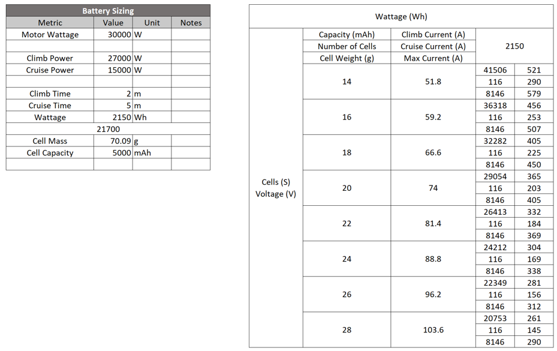
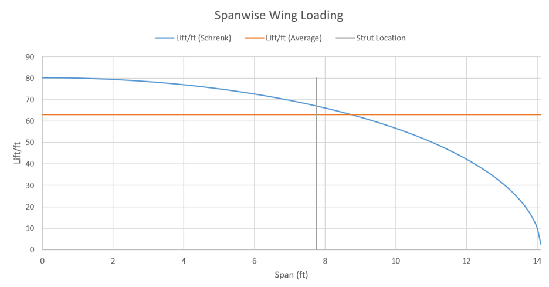
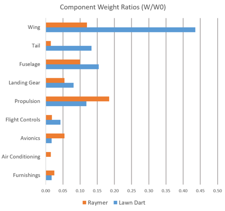
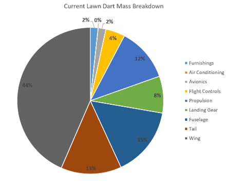

A few weeks ago I was about to start fabricating the frame when a co-worker gently convinced me to take some time to evaluate the W&B for the Lawn Dart (working name for the Ultralight) before starting fabrication. I thought this would be a fairly easy process but here I am a month later having completed structures, propulsion, etc. sizing for the entire Dart.
I started the W&B effort by deciding on weight “buckets,” comprehensive categories I could evaluate one by one.
The first “bucket” was propulsion. I had already decided to go with a BLDC from FREERCHOBBY since the cost was so low. I was stuck between their 25 and 30kW offerings but the mass delta was negligible and the 30kW offering had a lower shaft speed. To be clear I haven’t worked through prop sizing yet to evaluate their ability to hit my thrust need but from preliminary hand calcs 30kW at the shaft should be plenty. That said I did pick a roughly accurate prop to get a weight number (under 1kg so not critical at this stage).
I also found a 28S ESC and worked through some incredibly easy and incredibly poorly presented calcs for that pack weight (I’m baselining a custom build, likely 21700 cells). The mass is pretty high here which should give me adequate margin to fudge CG location.

The next major “buckets” were fuselage, wings, and tail. The complexity of the sizing here was structures calcs for the loaded members. I’m not going to go into detail here but the sizing was broadly dominated not by weight capacity (“metal is strong” – senior engineer @ work) but by deflection or by the free response. While the structures design is pretty fast and loose around here I did indulge in some non-linearities to keep everything from getting too crazy.

Ultimately, the outcome of this exercise was very exciting! My calculated weight was 258lbs, only 8lbs over the target which is extremely exciting. CG location, after some fiddling with battery position, ended up within 2” of target. All in: very good.
So, faced with exciting results and a chance to enter component design and manufacturing I’m doing what every great engineer does: start over! I’m mostly joking, but I am going to work through a re-sizing effort. My motivation is two-fold, firstly, I have all the infrastructure and process figured out. It should be a comparatively insignificant effort to redo the exercise at this point. Secondly, I think my plane is a bit too large. The plot below shows the weight ratios of my plane as compared to Raymer’s fig 66. Overall everything is tracking quite well, other than my wing, which is ~3x heavier than Raymer estimates it should be.
